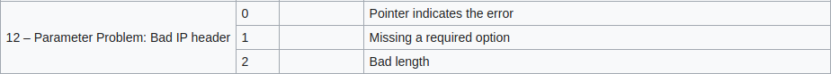
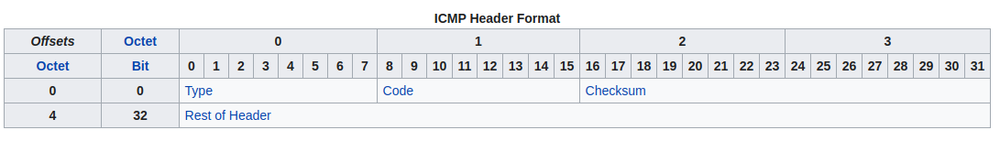

dammitimmad To je parameter problem u ip headeru npr neko polje nema duljinu kakvu treba imati i sl, ali da do provjere toga uopce dodje mora odgovarati checksum tj primatelj mora biti siguran da je dobio ono sto je posiljatelj poslao.
Konkretno tu informaciju se stavlja u ICMP, tip 12 koji ima 3 moguca tipa koje vidis na slici ispod:

a ovo je format icmp

Na onom grafu sto si stavila je drugi korak malo pojednostavljen, tj provjerava se samo checksum, ali ne i ove ostale stvari, a u to zadatku kad kazu da header ne valja impliciraju da se checksum poruke ne podudara s izracunatim. Ako checksum ne valja packet se samo odbacuje zbog razloga kojeg sam vec naveo( izvor ce vjerojatno poslati novi nakon nekog vremena jer nije dobio potvrdu o primitku od ishodista).